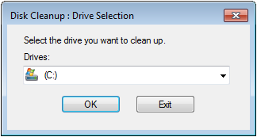
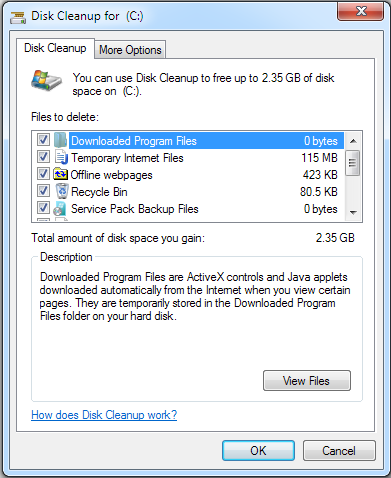
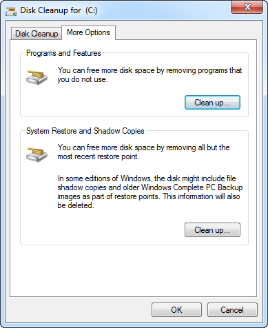

Use Cleanup to Reduce Data Volume on the Hard Drive
- From the Windows Start menu, type Disk Cleanup in the Search Programs and files text box.
- The Disk Cleanup : Drive Selection dialog box opens.

- In the Drives list, select the hard disk drive that you want to clean up, and then click OK.
- In the Disk Cleanup: Drive Selection dialog box, for the selected hard disk, verify the file types that are selected by default before deleting them, and then click OK.
To clean up the system files, you need Administrator permission, including the password. 
- Click Delete Files in the confirmation dialog box displays.
- Select the More Options tab and perform a Cleanup to clean files from all users on the computer to free even more disk space.
